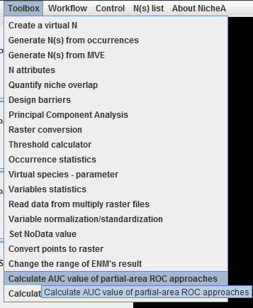
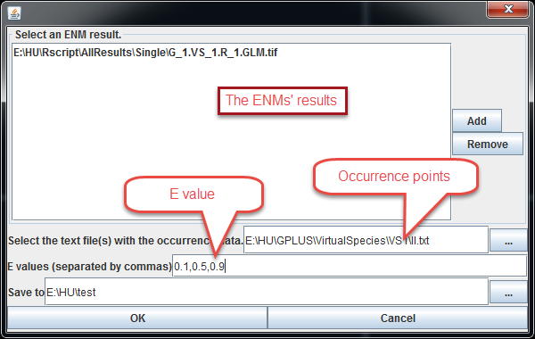
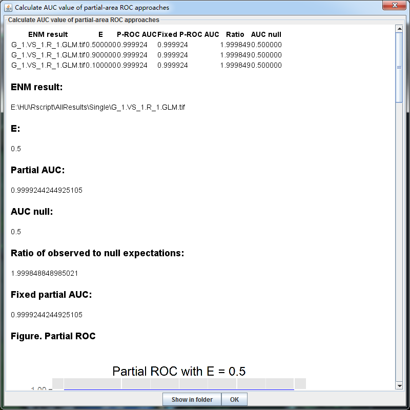

Calculate AUC value of partial-area ROC approaches
AUC has been heavily criticized when validating ENMs/SDMs.(Lobo et al 2007). A particularly sticky problem is that the values of AUC vary with the spatial extent used to select background points. Generally, the larger that extent, the higher the AUC value. Therefore, AUC values are generally biased and cannot be directly compared.
NicheA provides an improved method to calculate AUC, which was raised by Peterson, A. T., et al. 2008.

After selecting the required raster files, and set up the relevant parameters in the dialog (Fig.2), NicheA can calculate the P-ROC AUC values with different E values separated by commas. The result is shown in another form (Fig.3).


References
Lobo, J. M., et al. (2008). "AUC: A misleading measure of the performance of predictive distribution models." Global Ecology And Biogeography 17(2): 145-151.
Peterson, A. T., et al. (2008). "Rethinking receiver operating characteristic analysis applications in ecological niche modeling." Ecological Modelling 213(1): 63-72.